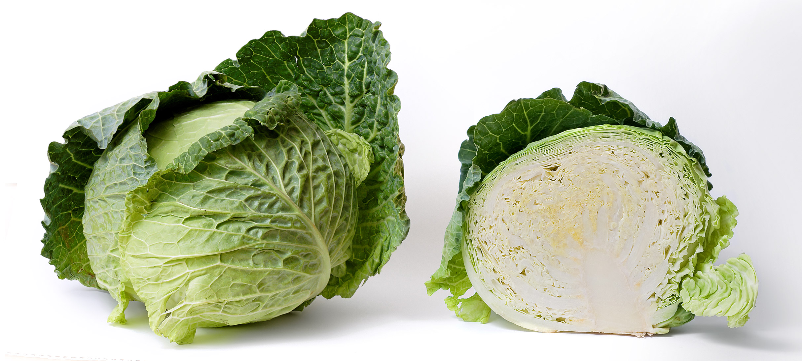

Organic Cabbages
Organic cabbages grown through vertical farming techniques offer several benefits. First, because they are grown indoors in a controlled environment, they are less susceptible to pests and diseases, reducing the need for pesticides and herbicides. Second, vertical farming allows for year-round production of fresh organic cabbages, regardless of weather conditions, which helps to meet the growing demand for fresh produce. Additionally, vertical farming requires less land and water compared to traditional farming methods, making it a more sustainable and eco-friendly option. Finally, because the cabbages are grown in nutrient-rich soil and carefully monitored for optimal growth conditions, they can offer superior flavor and nutritional content.
Growing Locaton: Cochin